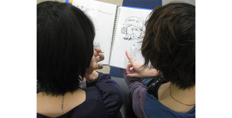
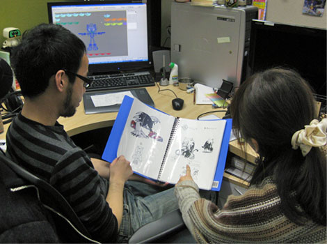
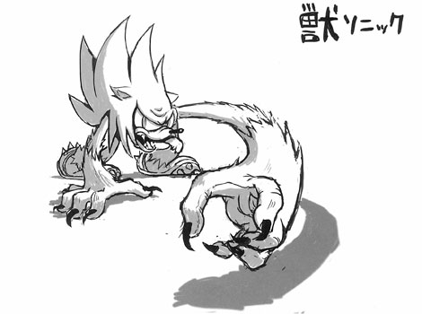

『発売3日前☆ ウェアホッグの秘密をハミだし！(前編)』
2009年02月16日
こんにちは、マツバラです！
発売まであと3日！
連続ハミだしも佳境に差し掛かりました！
こんにちは。ヨシノです。
今回ハミだしますのは、もちろん。
この前川村さんに快くお譲り頂いた、
ウェアホッグの初期デザイン集です。
うふふふふ……
早く、早く見ようよ、ヨシノ！
そうだね。
では、早速……

うわ―――！
今のウェアホッグと全然ちがう！
ウェアホッグの、出生の秘密。
たまりませんなあ。
もっと見る！
次のページ、次のページ！
棚橋：……君たち、何騒いでるの？
あっ、ウェアホッグのキャラクターデザイン担当の棚橋さん！
ウェアホッグのモデル等も作成した、
いつも優しくておひげが素敵な棚橋さんではないですか。
棚橋：何、その説明口調(笑)
……って、あれ？
そのファイルは……
あ、気付いちゃいましたか☆
作・棚橋さんの、
ウェアホッグ初期デザイン画集です。
棚橋：な、なんでそんなものがここに！
川村さんに預けておいたのに！
もしかして、ブログで公開するってこと？
すごく恥ずかしいんだけど……
まあまあ、
私たちの手にこのファイルが渡ったのが運の尽きです！
ちょっとお話を聞かせてください！
諦めて、いろいろハミだしてください。
棚橋：う、うーん。
ちょっと、僕の席まで来てくれない？
そこで話をしよう。
そして、棚橋さんのお席へ移動し……

↑資料を見る棚橋さんと、
棚橋さんのお隣の席の『SWA』スタッフ、長尾さん。
棚橋：懐かしすぎる……。
これ描いたの、もう2年前かあ……。
ではまず、
デザインのコンセプト等を聞かせてください！
棚橋：えっ。
もうインタビューはじまってるんだ(笑)
えーっと、
ウェアホッグには発注段階で「凶暴」「狼男」という確固としたコンセプトがあって、
それをどう「ソニック」にどう重ねていくか試行錯誤した覚えがあるなあ。
ほほう。
「凶暴」「狼男」……コレですか？

棚橋：これはもう、本当に初期の絵だ……
うう……
棚橋さん、恥ずかしがらずに胸を張って！
カッコいいじゃないですか、これ。
個人的に、長いモミアゲがポイント高いです！
……さて。
初期デザインはまだまだありますので、
引き続き明日もハミだしていきましょう。
それでは皆さま！
明日もお宝画像満載ですよ～♪
棚橋：まだ、やるの！？
日時: 2009年02月16日 16:00 | パーマリンク


 ソニックを愛する、元気な『SWA』2年目プランナー。
ソニックを愛する、元気な『SWA』2年目プランナー。 マイペースな『SWA』2年目プランナー。
マイペースな『SWA』2年目プランナー。
 ご意見・ご要望はこちら
ご意見・ご要望はこちら RSS
RSS